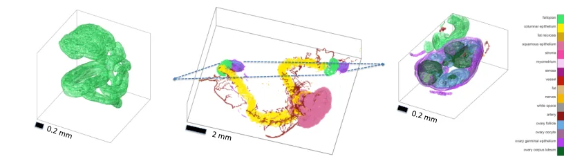

CODA-Based 3D Reconstruction of the Murine Female Reproductive Tract
Serial histology sections brought together to visualize tissue architecture in three dimensions.
Study design
The study maps the female mouse reproductive tract in three dimensions across 12 mice and three age groups. The goal is to compare how reproductive anatomy changes with age while preserving the spatial relationships between organs.
Reconstruction workflow
We used CODA to register serial H&E-stained sections, apply tissue segmentation, and assemble labelled 3D volumes. These maps support anatomical visualization and quantitative comparison across specimens.
